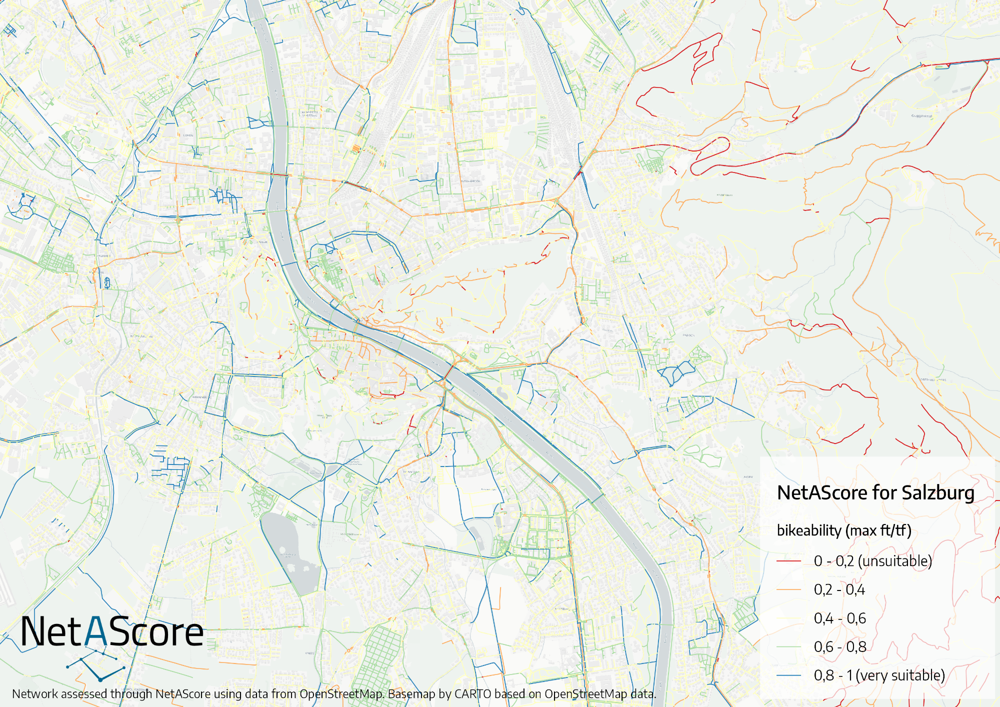

What is NetAScore?#
NetAScore
is a (commandline) software tool for assessing infrastructure suitability for different modes
provides default profiles for cycling and walking
can be used as foundation for advanced network analyses to support urban planning
supports OpenStreetMap and GIP (for Austria) network data
is open source
is easily customizable: simply adapt or create new mode profiles e.g. for addressing a specific trip purpose, specific target groups or local specifics
How does it work?#
NetAScore uses network data such as from OpenStreetMap as the main input. It combines this input with information on spatial context, and derives several indicators relevant to segment-based bikeability and walkability. In a next step, the software combines indicator values to derive a single suitability index per road segment. The automated processing makes use of a PostGIS spatial database, while relying on Python code for automation.
If you want to learn more about the steps that NetAScore applies to compute bikeability and walkability metrics, check The workflow.
Goals and Roadmap#
Our goal is to support open research and planning with providing NetAScore as open source software. We plan on developing further add-ons that build up on the assessed network and enable applications e.g. in routing, network analysis and very applied mobility planning topics. Furthermore, we look forward to ideas and contributions from the research and open source communities.
Non-Goals#
We do not want to:
provide another full GIS software
re-invent general-purpose network analysis tools and libraries such as NetworkX, igraph or OSMnx
develop very purpose-specific additions that are targeted to a single end user or customer. However, you are welcome to adapt the code yourself following the MIT license.
Exemplary output:#
This is an exemplary visualization of bikeability for Salzburg, Austria:
